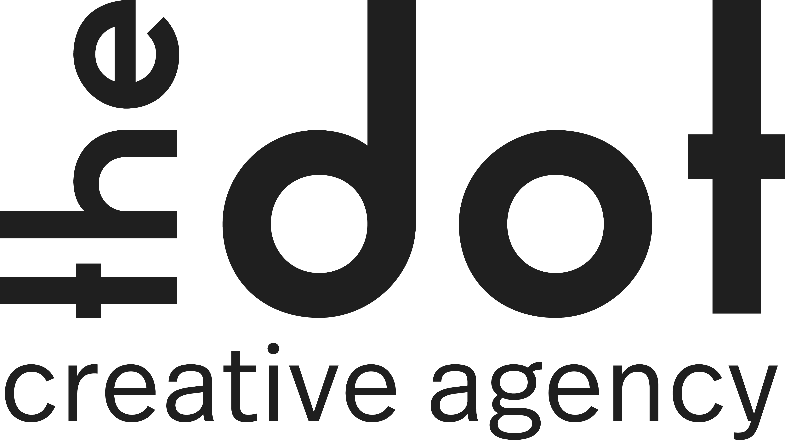

The dot — our signature device
The identity is a grid of circles: most filled with a soft radial gradient, a few solid ink. The same circle fills with our yellow radial gradient in interactive UI. Reach for the dot before any other shape.
Color — mono + one yellow
The canonical palette is five colors: a warm off-white canvas, near-black ink, one acid-yellow accent, and two warm greys. Nothing else competes.
Gradients — the yellow always glows
Yellow almost never appears flat. These are the production gradients; the first is how we fill shapes.
radial-gradient(circle farthest-corner at 50% 50%, #daff00cc, #faf9f6)radial at 100% 0%, #daff00cf, #eefb9dbd 34%, #faf9f6 53%radial at 100% 50%, #daff00a1, #faf9f6linear-gradient(to bottom, #faf9f6, #daff00a3)linear-gradient(96deg, #faf9f6, #daff00)linear-gradient(135deg, #daff00 0%, #faf9f6 100%)Circles and shapes fill with the yellow radial/linear gradient — never a flat yellow block.
Typography
Components
Conversion-first web design
Editorial layouts, sharp corners, a warm canvas — and one confident yellow glow.
Decorative elements
The vertical-line stripe is a signature divider — a fine full-width ruler of vertical ticks, used between sections site-wide.

 Dot motif
Dot motif Shape 7·1
Shape 7·1 Shape 6·2
Shape 6·2 Shape 6·3
Shape 6·3Brand voice
Strategic web design + business-systems integration for growing Ontario businesses. Not "pretty websites" — outcomes.
Brands that attract · Websites that convert · Systems that grow
Short, direct, benefit-first. Uppercase triads. Imperatives.
"Stop paying for disconnected tools." · "Strategic web design that actually works." · "Save 10–20 hours monthly."
For identity moments and taglines.
"Inspire brands to flourish." · "Convey meaning and creative spirit into everyday life." · "From refined identity to intelligent integration."
- Lead with the outcome — convert, grow, integrate, save time
- Be specific ("10–20 hours", "GTA / Ontario")
- Use three-beat rhythms and plain, confident language
- Speak to growing businesses, not "users"
- Hype adjectives — "cutting-edge", "world-class"
- Jargon for its own sake
- Hedging ("we try to", "hopefully")
- Cold, corporate distance